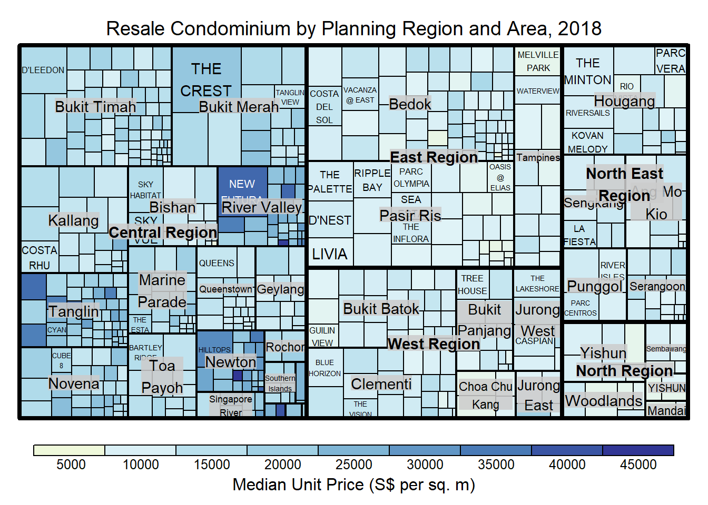
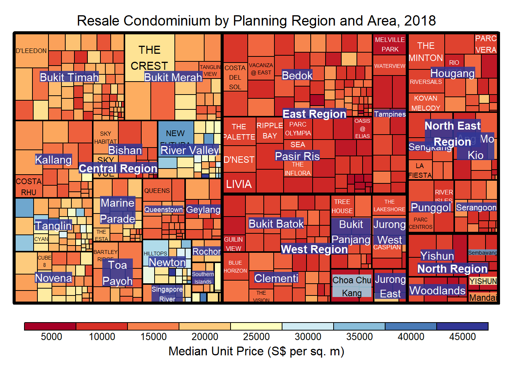
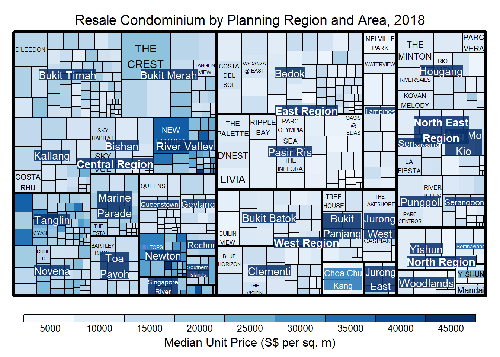
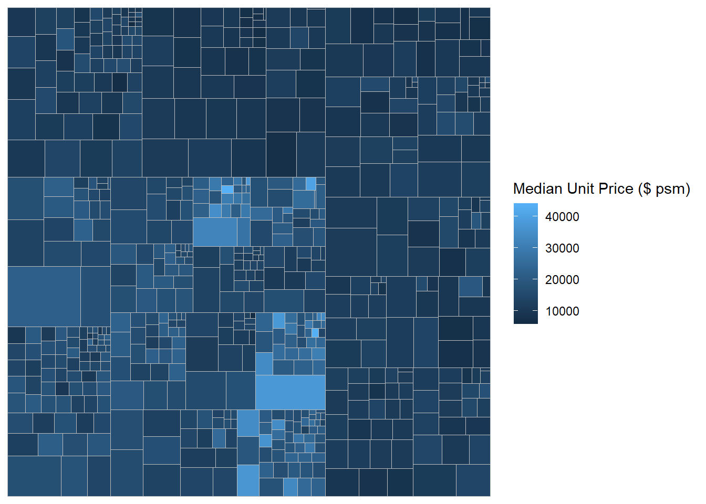
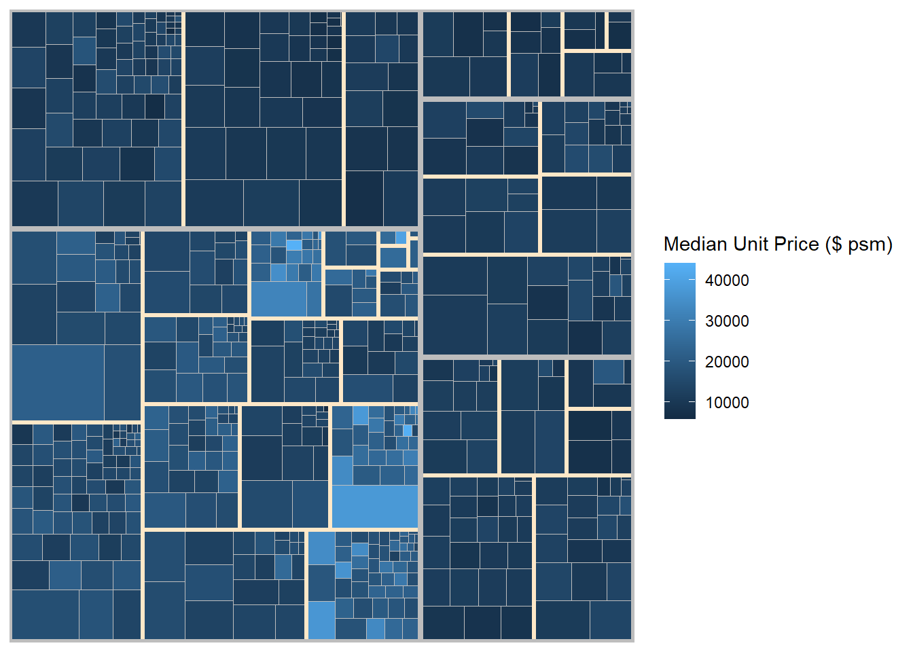
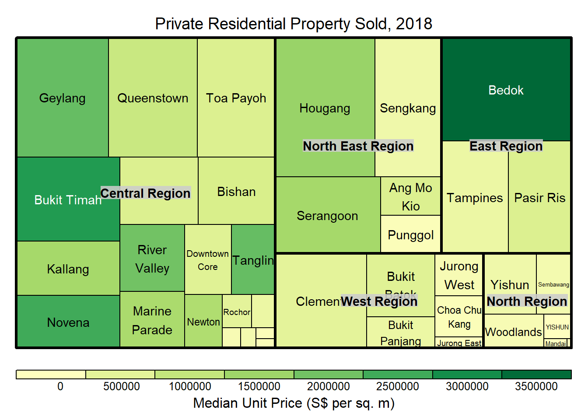

14 Treemap Visualisation
Hands-On Exercise for Week 6
(First Published: May 20, 2023)
14.1 Learning Outcome
We will learn how to create static and interactive Treemaps using various R packages.
14.2 Getting Started
14.2.1 Install and load the required R libraries
Install and load the the required R packages. The name and function of the new package that will be used for this exercise is as follow
- treemap : provides the necessary functions, classes, and methods to generate treemaps
14.2.2 Import the data
We import the data set for property sales in 2018 and assign it to realis2018.
Data Wrangling and Manipulation
The data.frame realis2018 contains trasactional records which are highly disaggregated and not appropriate to be used to plot a treemap. In this section, we will perform the following steps to manipulate and prepare a data.frtame that is appropriate for treemap visualisation:
group transaction records by Project Name, Planning Region, Planning Area, Property Type and Type of Sale, and
compute Total Unit Sold, Total Area, Median Unit Price and Median Transacted Price by applying appropriate summary statistics on No. of Units, Area (sqm), Unit Price ($ psm) and Transacted Price ($) respectively.
We can use a two lines code approach to perform grouping without using the pipe (|)
Show the code
realis2018_grouped <- group_by(realis2018, `Project Name`,
`Planning Region`, `Planning Area`,
`Property Type`, `Type of Sale`)
realis2018_summarised <- summarise(realis2018_grouped,
`Total Unit Sold` = sum(`No. of Units`, na.rm = TRUE),
`Total Area` = sum(`Area (sqm)`, na.rm = TRUE),
`Median Unit Price ($ psm)` = median(`Unit Price ($ psm)`, na.rm = TRUE),
`Median Transacted Price` = median(`Transacted Price ($)`, na.rm = TRUE))Aggregation functions such as sum() and median() obey the usual rule of missing values: if there’s any missing value in the input, the output will be a missing value. The argument na.rm = TRUE removes the missing values prior to computation.
The code chunk above is not very efficient because we have to give each intermediate data.frame a name.
A more efficient way to tackle the same processes by using the pipe, %>%:
Show the code
realis2018_summarised <- realis2018 %>%
group_by(`Project Name`,`Planning Region`,
`Planning Area`, `Property Type`,
`Type of Sale`) %>%
summarise(`Total Unit Sold` = sum(`No. of Units`, na.rm = TRUE),
`Total Area` = sum(`Area (sqm)`, na.rm = TRUE),
`Median Unit Price ($ psm)` = median(`Unit Price ($ psm)`, na.rm = TRUE),
`Median Transacted Price` = median(`Transacted Price ($)`, na.rm = TRUE))To learn more about pipe, visit this excellent article: Pipes in R Tutorial For Beginners.
14.3 Design Treemap with treemap Package
treemap package is a R package specially designed to offer great flexibility in drawing treemaps. The core function, namely: treemap() offers at least 43 arguments. In this section, we will only explore the major arguments for designing elegent and yet truthful treemaps.
Design a static Treemap
treemap() of treemap package is used to plot a treemap showing the distribution of median unit prices and total unit sold of resale condominium by geographic hierarchy in 2017.
First, we will select records belonging to resale condominium property type from realis2018_selected data frame.
Next, we create a treemap by using three core arguments of treemap(), namely: index, vSize and vColor.
Show the code

Things to learn from the three arguments used:
index
The index vector must consist of at least two column names or else no hierarchy treemap will be plotted.
If multiple column names are provided, such as the code chunk above, the first name is the highest aggregation level, the second name the second highest aggregation level, and so on.
vSize
- The column must not contain negative values. This is because it’s vaues will be used to map the sizes of the rectangles of the treemaps.
The treemap above was wrongly coloured. For a correctly designed treemap, the colours of the rectagles should be in different intensity showing, in our case, median unit prices.
For treemap(), vColor is used in combination with the argument type to determines the colours of the rectangles. Without defining type, like the code chunk above, treemap() assumes type = index, in our case, the hierarchy of planning areas.
Working with vColor and type arguments
In the following plot, we assign value to the type argument.
Show the code

Things to note:
The rectangles are coloured with different intensity of green, reflecting their respective median unit prices.
The legend reveals that the values are binned into ten bins, i.e. 0-5000, 5000-10000, etc. using equal interval of 5000.
Colours in treemap package
There are two arguments that determine the mapping to color palettes: mapping and palette. The only difference between 2 options is the default value for mapping. The “value” treemap considers palette to be a diverging color palette (say ColorBrewer’s “RdYlBu”), and maps it in such a way that 0 corresponds to the middle color (typically white or yellow), -max(abs(values)) to the left-end color, and max(abs(values)), to the right-end color. The “manual” treemap simply maps min(values) to the left-end color, max(values) to the right-end color, and mean(range(values)) to the middle color.
(A) The following plot shows a treemap with type = ‘value’
Show the code

Things to note:
although the colour palette used is RdYlBu but there are no red rectangles in the treemap above. This is because all the median unit prices are positive.
The reason why we see only 5000 to 45000 in the legend is because the range argument is by default c(min(values, max(values)) with some pretty rounding.
(B) The following plot shows a treemap with type = ‘manual’
The range of the Median Unit Price is mapped linearly to the colour palette.
Show the code

Things to note:
- The colour scheme used is very confusing. This is because mapping = (min(values), mean(range(values)), max(values)). It is not wise to use diverging colour palette such as RdYlBu if the values are all positive or negative.
To overcome this problem, a single colour palette such as Blues should be used.
Show the code

Treemap Layout
treemap() supports two popular treemap layouts, namely: “squarified” and “pivotSize”. The default is “pivotSize”.
The squarified treemap algorithm (Bruls et al., 2000) produces good aspect ratios, but ignores the sorting order of the rectangles (sortID). The ordered treemap, pivot-by-size, algorithm (Bederson et al., 2002) takes the sorting order (sortID) into account while aspect ratios are still acceptable.
The following plot shows a treemap with algorithm = ‘squarified’
Show the code
treemap(realis2018_selected,
index=c("Planning Region", "Planning Area", "Project Name"),
vSize="Total Unit Sold",
vColor="Median Unit Price ($ psm)",
type="manual",
palette="Blues",
algorithm = "squarified",
title="Resale Condominium by Planning Region and Area, 2018",
title.legend = "Median Unit Price (S$ per sq. m)"
)
Using sortID When “pivotSize” algorithm is used, sortID argument can be used to dertemine the order in which the rectangles are placed from top left to bottom right.
Show the code
treemap(realis2018_selected,
index=c("Planning Region", "Planning Area", "Project Name"),
vSize="Total Unit Sold",
vColor="Median Unit Price ($ psm)",
type="manual",
palette="Blues",
algorithm = "pivotSize",
sortID = "Median Transacted Price",
title="Resale Condominium by Planning Region and Area, 2018",
title.legend = "Median Unit Price (S$ per sq. m)"
)
14.4 Design Treemap using treemapify Package
treemapify is a R package specially developed to draw treemaps in ggplot2. In this section, we will learn how to designing treemps closely resemble treemaps designing in previous section by using treemapify. Before we getting started, you should read Introduction to “treemapify” its user guide.
Design a basic treemap
Show the code

Define sub-grouping
(A) The following plot is grouped by Planning Region
Show the code

(B) Now, we group by “Planning Region” as the 1st level and “Planning Area” as the 2nd level
Show the code

We add boundary lines to outline the 2 levels of grouping
Show the code

14.5 Design Interactive Treemap using d3treeR
Install the d3treeR package using devtools.
(The above codes should only be run once)
Load the d3treeR package
Designing An Interactive Treemap
The plot requires two steps.
treemap()is used to build a treemap by using selected variables in condominium data.frame. The treemap created is save as object called tm.
Show the code

- Then
d3tree()is used to build an interactive treemap.
\(**That's\) \(all\) \(folks!**\)